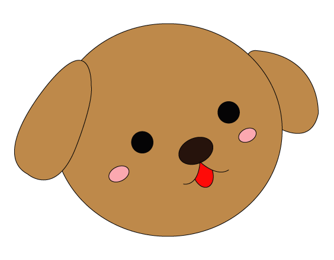

陳怡靜
- 生日：90/07/14
- 就讀：亞東技術學院
- 科系：資訊管理系
- 興趣：打球
- 缺點：個性懶散
- 電子郵件：108111214@mail.oit.edu.tw
我叫陳怡靜，今年18歲，是個正在亞東技術學院就讀資訊管理系的學生，在我高中畢業的那個暑假經過介紹，到了一間主要在做氣動元件的公司打工，我的工作內容前期主要是負責幫忙整理檔案並歸檔，中期利用AutoCAD繪製一些簡易2D圖，後期利用solidworks把2D圖繪製成3D圖並且用3D列印印製出來，不過因為AutoCAD和solidworks都是我從未接觸過的軟體，所以我從頭學習，那段時間我除了熟悉了這兩個軟體之外，我還學會看三視圖，並且透過三視圖想像3D大概的樣子，再把它畫出來。


在上大學前，我沒什麼目標，只覺得要把眼前的事情做好而已，所以就沒想過未來會想從事什麼樣的行業，只覺得一切就順其自然吧，直到上了大學，接觸到了網頁設計這門課，在上課的過程中，我漸漸地對網頁設計有了興趣，雖然在上課的過程中時常遇到困難，若是以前的我，一旦遇到困難我就會想放棄，但這次我卻沒想要放棄，且未來我想往網頁的方向前進。
